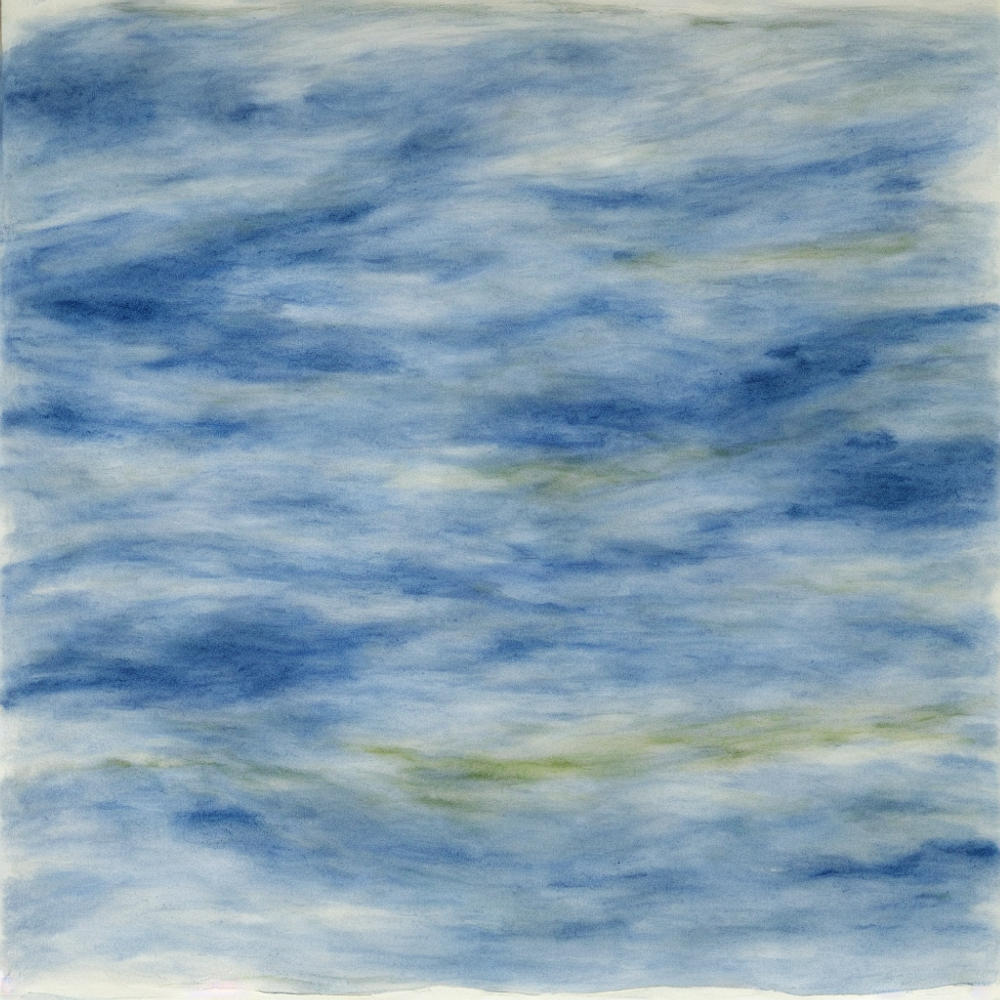

This is not a nostalgia project. It is an infrastructure project disguised as cultural survival.
In the previous post, I wrote about borrowed fluency and Morfar's Böckling. That story ends with a question: if we know the Baltic's contamination history, and we know the tools that could reduce risk over time, why are we still acting like restoration is optional?

The problem, clearly
The Baltic Sea carries a legacy burden of contaminants, including dioxins and PCBs, and now also PFAS concern in the wider ecosystem discussion. These compounds move slowly through sediments and food chains. They do not disappear because we got better at policy language.
Important nuance: this is not a panic narrative. Public health authorities in the region still recognize the nutritional value of fish for most people when consumed with variation and guidance. But that does not remove the underlying environmental debt. It just means we are currently managing risk, not resolving cause.
What is being done now
There are real efforts:
- Regional cooperation frameworks exist, including HELCOM commitments.
- Emissions from banned legacy pollutants have declined over decades.
- Monitoring and data quality have improved.
- Method harmonization work is ongoing across countries.
These are necessary steps, but they are not equal to a full restoration strategy. We are measuring better than we are fixing.
The vision
If we treat the Baltic as shared critical infrastructure, not just a scenic asset, the goal changes:
- fish traditions can continue without inherited uncertainty,
- contaminant hotspots are actively remediated,
- ecosystems recover with long-term stewardship,
- and public trust is rebuilt through transparent progress.
This is not a one-ministry project. It is a 30 to 50 year regional mission.
A practical roadmap
1) Finish source control
Close remaining leakage from legacy industrial systems, unsafe waste pathways, and combustion sources. Enforce what already exists. Fund cleanup where liability is diffuse.
2) Remediate sediment hotspots
Use a portfolio approach based on local conditions:
- targeted dredging and secure treatment where removal is justified,
- in-situ capping and binding where disturbance risk is too high,
- long-horizon pilots for biological and chemical innovations.
No single method solves all basins. Program design matters more than ideology.
3) Restore catchments and coastlines
Rivers, soils, harbors, and wetlands all connect to the same sea. Cleanup must include watershed interventions, habitat restoration, and oxygen-stress resilience.
4) Build an open Baltic data layer
Create a shared public data backbone across countries:
- contaminant maps,
- fish-risk profiles by species and size,
- remediation status dashboards,
- and independent audit trails.
If people cannot see progress, they will not trust progress.
5) Create a Baltic Restoration Finance Stack
This is where my project focus sits. We need blended capital, not one funding source:
- public baseline funding for long-cycle public goods,
- private co-investment for measurable remediation outcomes,
- mission grants for R&D and pilot sites,
- and milestone-linked disbursement tied to verified ecological indicators.
The key is continuity. Restoration fails when funding is episodic.
What we would use capital for
This cannot stay abstract. The first funding ask should be tied to a visible 36-month execution plan with measurable outputs.
Workstream A: Baltic Net (measurement backbone)
Build a staged buoy and shoreline sensor network that gives continuous environmental signal instead of sporadic snapshots.
- 25 to 40 instrumented buoys in pilot basins and risk corridors.
- Fixed shoreline stations at river mouths, harbors, and outfalls.
- Edge connectivity via LTE/5G where available, satellite fallback where needed.
- Signed IP telemetry packets (ping heartbeat + sensor payload) to prove uptime and data integrity.
Core sensor package for continuous monitoring:
- dissolved oxygen and oxygen saturation,
- temperature and salinity gradients,
- turbidity and chlorophyll proxies,
- conductivity, pH, and oxidation-reduction potential,
- current and wave context for transport modeling.
For pollutants like PFAS/PCB/dioxin where continuous in-water sensing is limited, Baltic Net pairs live telemetry with scheduled passive samplers and lab analysis. The value is fusion: high-frequency water-state data plus periodic contaminant assays.
Workstream B: Triangulation and risk mapping
Raw sensor values are not enough. Capital should fund a shared modeling layer that translates measurements into actionable maps.
- Data assimilation model combining buoy, station, lab, and satellite inputs.
- Triangulation of oxygen stress, turbidity load, and contaminant risk corridors.
- Open dashboard with basin heatmaps and trend confidence bands.
- Public API for researchers, municipalities, and fisheries.
This is the shift from "we have data" to "we can prioritize intervention this quarter."
Workstream C: Filter and interception pilots (where they actually work)
Do not promise to "filter the whole sea." Filter where flow is controllable.
Pilot classes:
- Stormwater interception units using activated carbon and biochar media near urban discharge points.
- Harbor and marina treatment skids for runoff and maintenance-related contaminants.
- Tributary inflow polishing at selected hotspots using modular adsorption and ion-exchange media.
Each pilot should run with pre/post sampling, seasonal comparisons, and cost-per-kilogram-removed estimates. If it cannot be measured, it is not a pilot. It is theater.
Workstream D: Governance, verification, and local operators
Fund independent measurement verification, local technician training, and maintenance operations so infrastructure survives political cycles.
- Third-party QA for data and methods.
- Municipal and university operator partnerships.
- Procurement standards that prevent vendor lock-in.
A concrete first capital blueprint
Indicative allocation for an initial pilot vehicle:
- 35% Baltic Net hardware, deployment, and maintenance,
- 20% data platform, modeling, and open API,
- 25% interception and filter pilots,
- 10% verification, compliance, and independent audit,
- 10% local operator capacity, training, and contingency.
This creates immediate signal, near-term intervention evidence, and a basis for larger cross-border capital rounds.
Why this matters beyond ecology
This is about food culture, regional identity, health confidence, and intergenerational legitimacy. When a sea becomes a permanent risk calculation, people inherit caution instead of belonging. That affects communities long before it shows up in national accounts.
I do not want to preserve Baltic traditions as museum objects. I want to preserve the conditions that let them remain ordinary life.
What I am building toward
I am developing this as a real project and seeking funding partners who can think in 10 to 50 year horizons. The ambition is not to publish another report. The ambition is to operationalize restoration: shared metrics, fundable interventions, and governance that survives election cycles.
Detailed technical specifications, pilot architecture, and implementation updates will live on my regular landing page, not in this blog stream.
If you work in public finance, environmental engineering, maritime policy, food systems, or philanthropic capital and want to build this with us, I want to talk.
Because this is the real cliffhanger: the Baltic Sea does not need one more elegy. It needs a financed future.